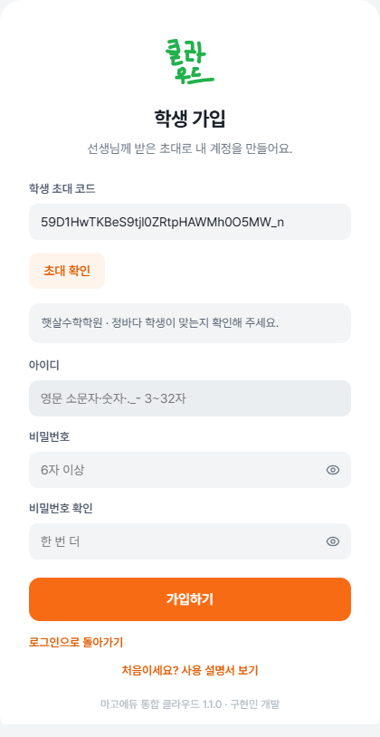
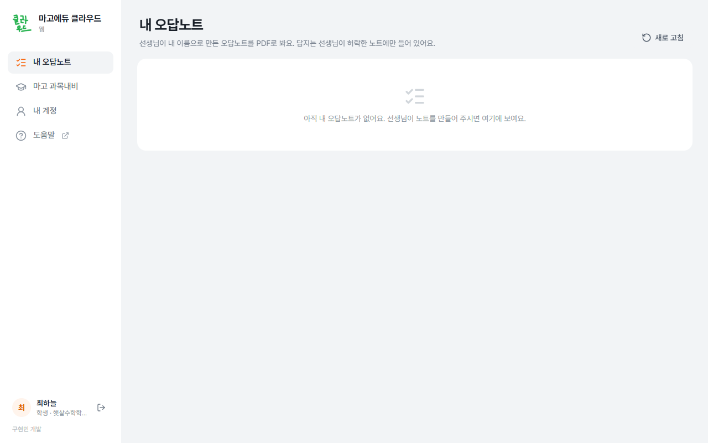

학생용 안내
받은 가입 코드 또는 아이디로 시작합니다. 인터넷 브라우저만 사용합니다.
처음 로그인하기
받은 정보에 맞는 절차를 선택합니다.
가입 코드를 받은 경우
- 가입 코드 화면을 엽니다.
브라우저에서 mago.milky.kr을 열고 가입 코드가 있어요를 누릅니다. 가입 주소를 받았다면 주소를 엽니다.

통합 클라우드 로그인 화면 - 가입 코드를 확인합니다.
코드를 입력하고 다음을 누릅니다. 학생 코드이면 학생 계정 만들기 화면으로 이동합니다.

학생 계정 만들기 화면 - 아이디와 비밀번호를 정합니다.
아이디는 3~32자의 영문 소문자·숫자·점·밑줄·붙임표로 입력합니다. 비밀번호는 6자 이상 입력하고 가입하기를 누릅니다.
코드가 만료되었거나 이미 사용된 경우 선생님에게 새 코드를 요청합니다. 코드는 발급 후 7일 동안 한 번 사용할 수 있습니다.
아이디·임시 비밀번호를 받은 경우
- 받은 정보로 로그인합니다.
mago.milky.kr에서 아이디와 임시 비밀번호를 입력하고 로그인을 누릅니다.
- 비밀번호를 변경합니다.
새 비밀번호 안내가 나오면 임시 비밀번호와 새 비밀번호를 입력하고 비밀번호 바꾸기를 누릅니다.
로그인하면 왼쪽에 , , 이 표시됩니다.
내 오답노트 보기
- 내 오답노트를 엽니다.
왼쪽 를 누릅니다. 선생님이 내 이름으로 만든 노트가 보입니다.

PDF 보기·PDF 받기로 노트를 열거나 저장합니다. - 화면에서 보거나 파일로 받습니다.
PDF 보기는 새 탭에서 엽니다. PDF 받기는 파일로 저장합니다. 새 탭이 안 열리면 PDF 받기를 써 확인합니다.
목록이 비어 있으면 새로 고침을 누릅니다. 그래도 없으면 선생님에게 내 노트를 만들어 주셨는지 문의합니다.
비밀번호 바꾸기
- 내 계정을 엽니다.
통합 클라우드 웹의 왼쪽 을 누릅니다.
- 새 비밀번호를 저장합니다.
지금 비밀번호, 새 비밀번호, 새 비밀번호 확인을 넣고 비밀번호 바꾸기를 누릅니다. 이름이나 담당 선생님을 고쳐야 하면 선생님에게 말씀드립니다.
비밀번호를 잊었으면 선생님에게 초기화를 요청합니다. 로그인 화면의 비밀번호를 잊었어요에서도 안내를 볼 수 있습니다.